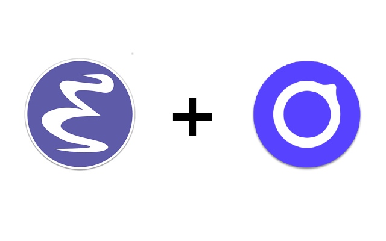
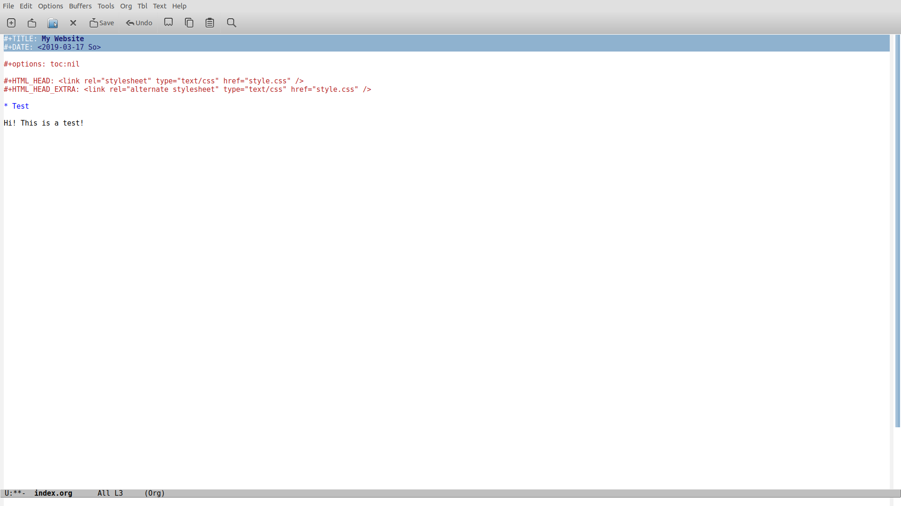
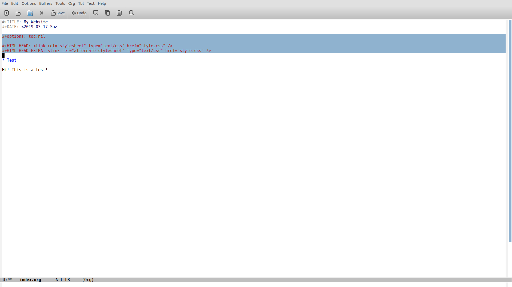
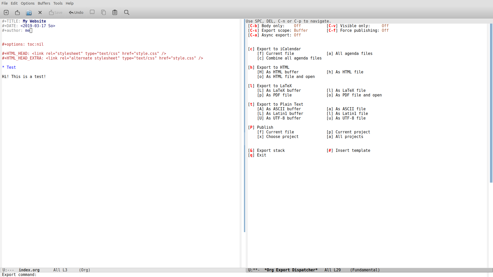
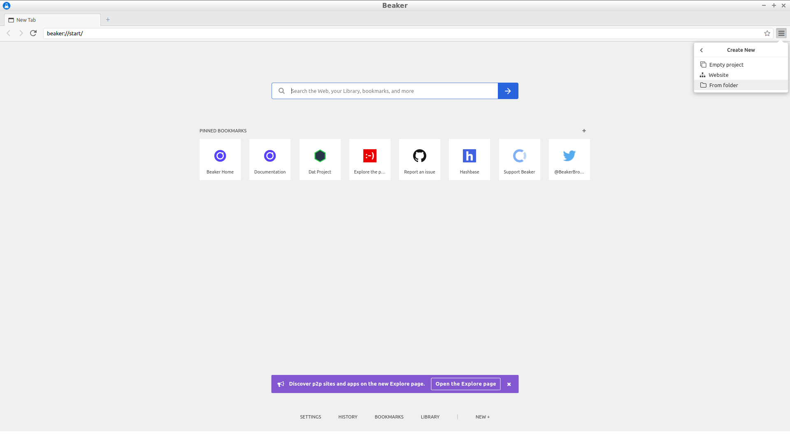
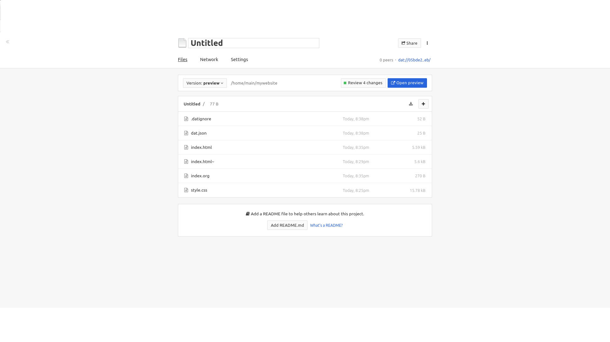
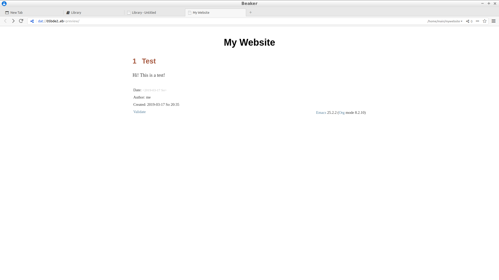

Emacs + Beaker Browser = Website in 5 minutes

What is the Beaker Browser?
Beaker Browser is a browser that allows users to use the dat protocol to browse websites shared with peer-to-peer (p2p). This allows to disperse the computational power necessary to load a website. Basically, the more people seed (aka share on their own computer) your website, the faster your website and webapps will load. One of the main arguments about this is that many people host websites on servers that would not deal as well with a sudden huge number of visitors as a peer-2-peer network would (given that enough people seed a site under heavy traffic).
However, although this scenario is possible, the best thing Beaker Browser allows you to do is hosting your website on your pc, using only your browser, and allowing others to seed it so that you do not have to pay any cloud services to keep your site up. Moreover, you have full capacity of looking at the source of any website on the dat network. It seems, therefore, that the main advantage that this browser offers is to empower the users.
Even though the browser is still being developed, my experience is really positive so far and it has worked quite nicely, giving only few problems with memory leaks and one single freeze in a month of almost daily use.
Anyways, you should definitely check out this presentation on the browser, which is quite extensive and shows some examples.
Emacs Combo
By using Org-mode in Emacs, it is actually possible to create a static, very basic, website in minutes!
Org-mode allows to export .org file to html and, some other packages, allow to generate entire blogs and static websites from .org files with very little configuration.
For this "tutorial", however, I will just use the simple html export and a css file provided by this awesome person and available on their GitHub.
Creating the Org file
First of all choose a directory which will be dedicated just to your dat webpage. Create an Org file with Emacs and this is all you will need to do to setup the basic necessary things:
- Insert Title and Date

- Remove the table of contents if you do not want one with the toc option. Then add your css files in the header for the exported html.

- Add the author if necessary and write some content
- Export your .org files to html you just by using the keybindings
C-c C-e and then hit h twice.
- Create a CSS file for your html file, for this example I used the CSS mentioned in the previous paragraph.
Creating the webpage
Now, open your Beaker Browser, click on the menu on the top right and select Create New -> From Folder. Then, choose the folder where the org file was created that will host your webpage.

After this, you will have an overview of the folder containing your files. It's very similar to GitHub and, indeed, it has version control as well. You can now even customize the .datignore file to ignore the temporary files usually generated by Emacs.

Let's click now on the Open Preview and we will see how our website will look like (it's not yet published)

Neato! Now to publish it we just click on the Review changes button and then on the Publish button.
Now you can share the superlong and weird link with your friends or, you can use https://hasbase.io (also dat://hashbase.io) to make a url like the one from my page: dat://bloglinguistica.hashbase.io
If you do not use hashbase, which will seed 24/7 the website for you, you will have to keep the machine where you created your website on for people to be able to visit it, but as soon as other people start seeding it, it won't be necessary anymore.